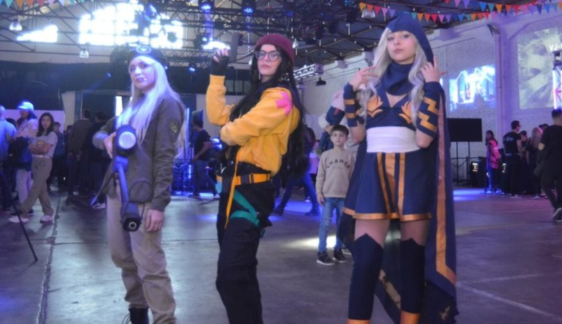

Tercer encuentro provincial de videojuegos en Bahía Blanca
El pasado 22 y 23 de abril en el Puerto de Bahía Blanca se desarrolló el tercer evento provincial de videojuegos de la localidad, organizado por el Instituto Cultural de la provincia de Buenos Aires, a través de la Subsecretaría de Industrias Creativas e Innovación Cultural junto con el Consorcio del puerto. En este evento, con 6hs de duración por jornada, participaron más de 45.000 personas de todas las edades que pudieron disfrutar de un sinnúmero de propuestas y actividades.

Las referencias a la década del '80 y '90 estaban de la mano de los clásicos arcades. Sí, los fichines dentro de muebles lookeados que en nuestra época había que agregarle cospeles para sumar una vida y ver la acción. “Insert Coin” y “Game Over” eran las fronteras de nuestra felicidad. Jugamos al “Mortal Kombat”, “Wonder Boy” y “Snow Bross”.
Más adelante cronológicamente pasamos por videoconsolas como Nintendo, en donde “Mario Bross” fue la estrella. Pero también pudimos ver torneos de E-Sports, en donde el fútbol y el básquetbol tenían su lugar preferencial. La disputa fue intensa y cobró picor de acuerdo a los jugosos premios en juego.
Más allá estaba el sector de realidad virtual. Sorprendió ver a tantos jóvenes flasheando realidad con las gafas que le envolvían el campo visual y los llevaba a hacer movimientos certeros para la VR y cómicos para los desprevenidos.
Pero no todo era jugar. El encuentro le dio un lugar destacadísimo a la industria creativa. Porque para lograr un producto final de este tipo es necesario un equipo multidisciplinario. No es cosa de chicos: programadores, diseñadores, artistas visuales, músicos, locutores y una gran variedad de profesiones específicas de acuerdo al objetivo final.
Fuentes: Telam - La Nueva